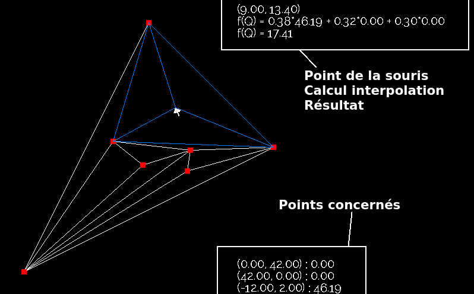

Voici notre projet de programmation générique MIF31.
Le document suivant va énoncer assez rapidement tout ce qu'il faut savoir.
Une fois l'interface graphique chargée, en plaçant votre souris dans un simplex, vous aurez une prévisualisation du point d'interpolation qu'elle représente.

Puis, un clic gauche permet de fixer ce point, avec la valeur d'interpolation calculée.
Et ainsi de suite...